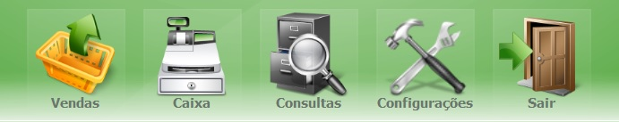
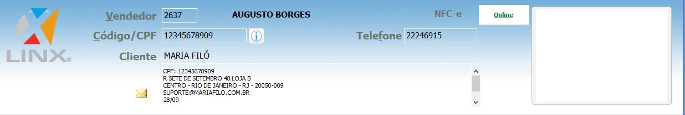
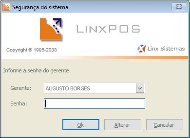
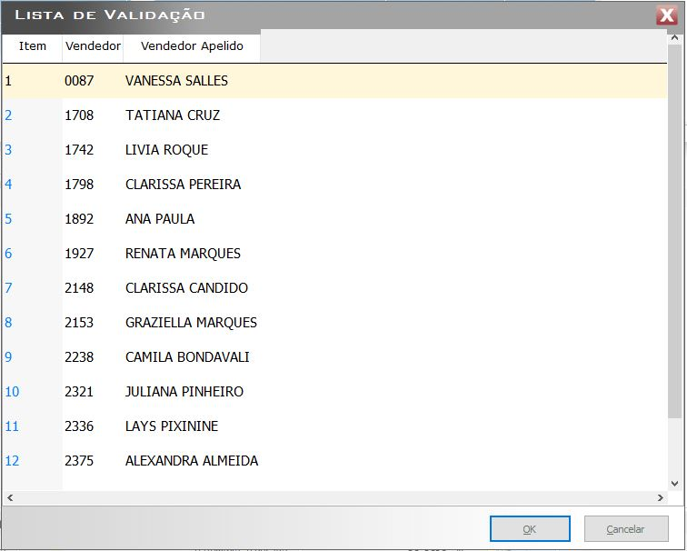
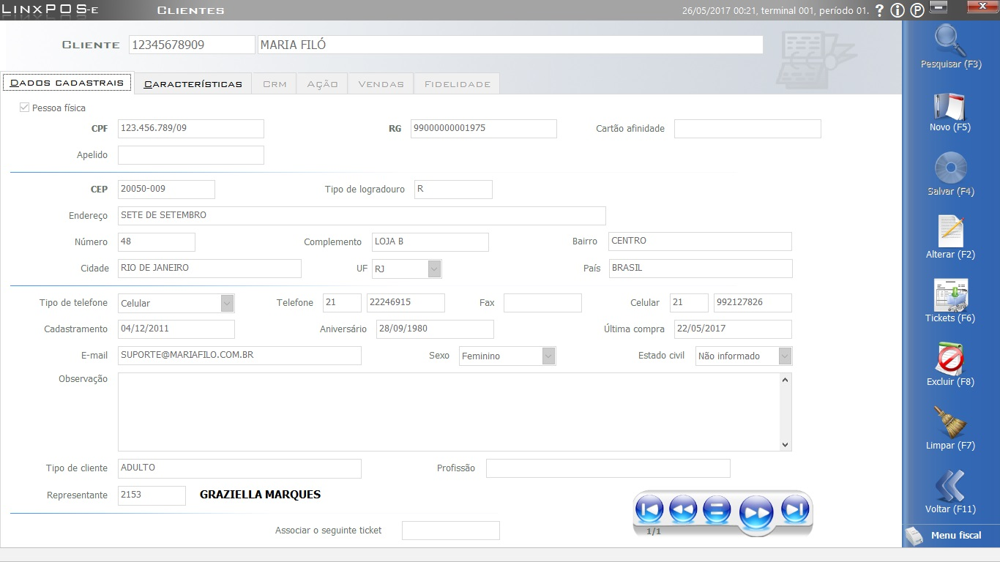
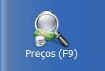
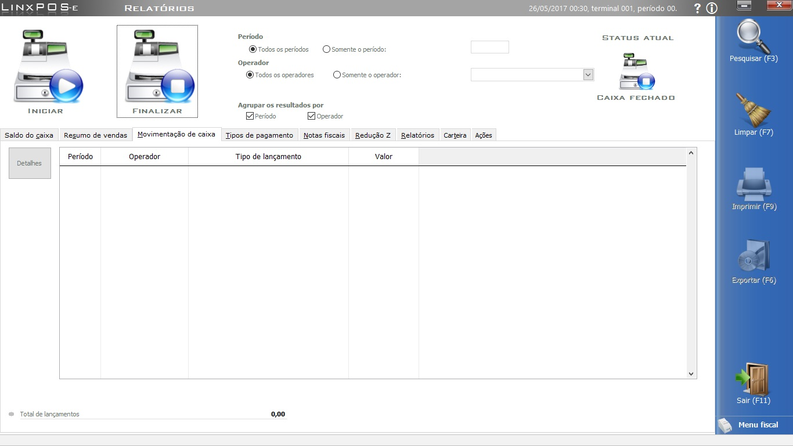
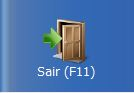
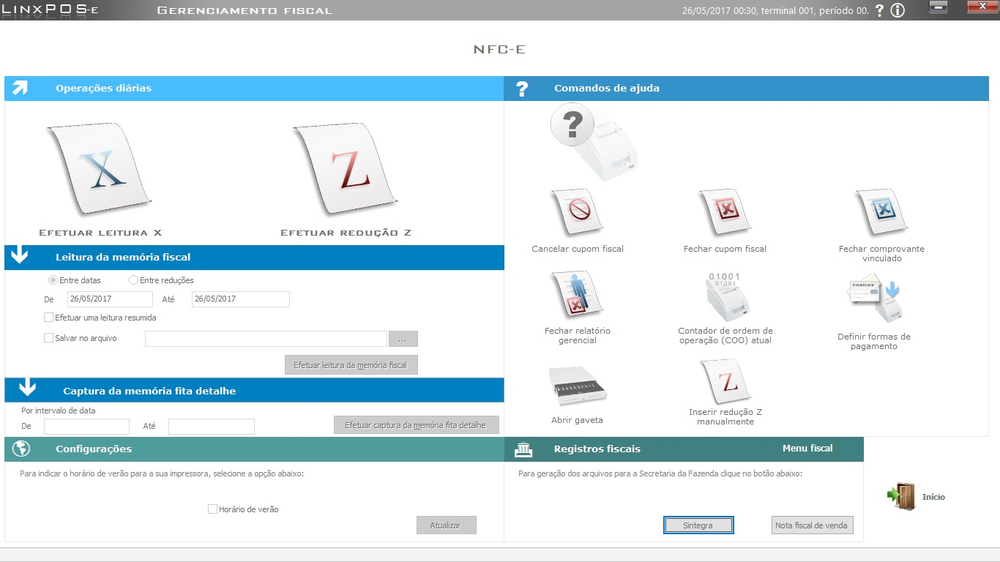
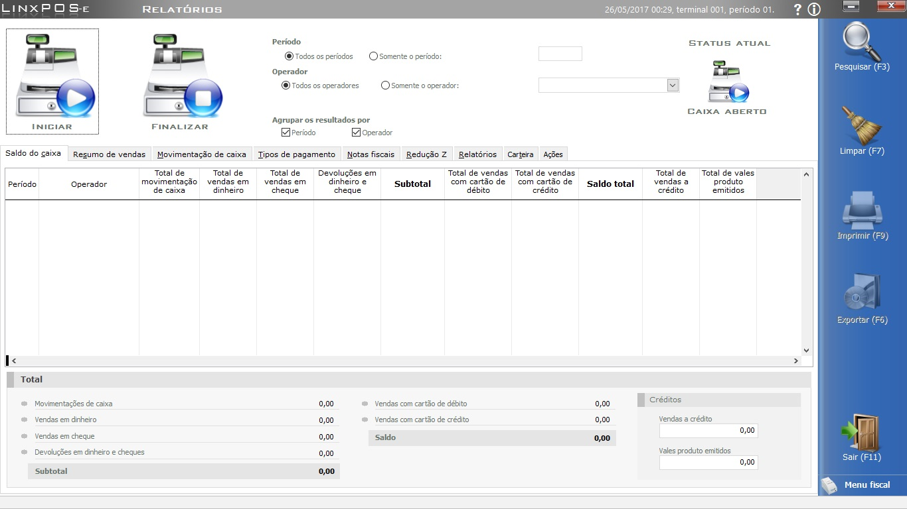

LinxPOS
O Linx POS é um software especialmente desenvolvido para gerenciar e controlar as operações no ponto de venda. Oferece consultas e relatórios relativamente às vendas, fechamentos e controle de caixa, além de permitir a geração de informações que devem estar sempre disponíveis para eventuais fiscalizações.
Vendas
Existem diversas formas para realização de vendas no sistema LinxPOS, aqui vamos listar as mais utilizadas
OBS.:Para realizar uma venda no sistema deverão ser atendidos os pré-requisitos abaixo, somente após realizar esses procedimentos será possivel realizar uma venda.
- Abertura de Caixa
- Abertura Fiscal - Leitura X - APENAS PARA LOJAS COM IMPRESSORA FISCAL
Venda Simples
- Selecionar o módulo de Vendas no Menu principal 
Séra exibida a tela de segurança do sistema para validação do operador e senha. Selecionar o operador e digitar a senha.
Na tela de vendas, sempre será exibida a lista de validação com o cadastro de todos os vendedores ativos no sistema, selecione o vendedor correspondente a venda atual.-
Proximo passo será incluir o cliente para fidelização junto a marca Maria Filó inserindo o CPF do cliente em atendimento, caso o cliente já possua cadastro no sistema os mesmo preencherá os dados automaticamente caso ao contrario o mesmo deve ser cadastrado.

OBS.:Existem 3 formas para localizar o cadastro do cliente: CÓDIGO/CPF, NOME ou TELEFONE.- CPF
- NOMECOMPLETO
- ENDEREÇO COMPLETO (CEP, LOGRADOURO, ENDEREÇO, NÚMERO, BAIRRO, CIDADE, UF e PAÍS)
- TELEFONE
- DATA DE NASCIMENTO
- E-MAIL(Caso o cliente não queira informar cadastrar: informar o email da loja)
Segue abaixo os campos obrigatórios para realizar o cadastro do cliente.
OBS2.: Caso o cliente não queira realizar o cadastro, utilizar o CPF PADRÃO: 123.456.789-09 -CLIENTE MARIA FILÓ
- Bipar ou digitar o produto a ser inserido na venda.
- Após incluir o primeiro produto, Será necessário incluir o número da boleta na venda, digitar o número do ticket, para as lojas que não possuem boleta o sistema ira gerar o código do ticket automaticamente.
-
Selecionar a Forma de Pagamento, selecionando PAGAMENTO (F3)
OBS.: Existem diversas formas de pagamento: DINHEIRO, CARTÃO DE CRÉDITO E DÉBITO POS e TEF, CHEQUES. SEMPRE que selecionarem uma forma de pagamento OBSERVAR OS DADOS A SEREM PREENCHIDOS.
No Caso da utilização do TEF (Cartão de Crédito ou Débito PDV), as informações serão preenchidas automaticamente.
- DINHEIRO (VALOR PAGO)
- CHEQUE (BANCO, CONTA, NUMERO DO CHEQUE..ETC)
- CARTÃO DE CRÉDITO OU DÉBITO POS (BANDEIRA, PARCELAS, TÍTULO e APROVAÇÃO)
OBS.: OS CARTÕES REDESHOP E MAESTRO DEVERÃO SER SELECIONADOS COMO “REDESHOP”
- Selecionar FINALIZAR (F2) para concluir a Venda e ser impresso o CUPOM DO CLIENTE.





Vendas com Desconto
Existem 3 formas de o desconto ser realizado:
- Porcentagem - informa-se o valor percentual que deve ser abatido do valor do item. O sistema calcula automaticamente o desconto em reais e o valor total do produto após o desconto;
- Desconto - informa-se em reais o valor a abater do total do item. O sistema informa o percentual de desconto que está sendo abatido e o valor total do produto após o desconto;
- Preço final do produto - informa-se o valor total do produto após o desconto. O sistema informa o percentual de desconto oferecido no item e o valor do desconto em reais.
Desconto no item
- Na tela de vendas, preencha o vendedor e o cliente.
- Clique na opção Preços (F9). 
- Insira o produto para a venda.
- Posicione o cursor sobre o item desejado e clique em Desconto. Será apresentada a tela padrão de descontos.
- Selecione a opção Desconto e informe o valor desejado de desconto na venda.
- Clique no botão OK para confirmar o desconto.
- Clicar no botão Adicionar à Venda para inserir o Produto já com o Desconto aplicado na tela de venda.
Desconto na Tela de Venda
Desconto na Tela de Pagamento
Venda Com Tipo de Venda
O Marketing da Empresa disponibiliza algumas Campanhas e Parcerias Promocionais, onde são aplicados os Descontos, segue alguns exemplos:
- Cliente VIP
- Aniversariantes
- Passaporte
- Empresas parceiras
- Funcionários
- Campanhas
OBS.: Cada Tipo de Venda é permitido aplicar um Limite de Desconto, caso possuam alguma dúvida, entrar em contato com o Marketing para maiores esclarecimentos.
- Na Tela de Vendas deverá selecionar a Vendedora
- Clicar em Tipo de Venda e Selecionar a Operação de Venda desejada.
Trocas
Por meio do LinxPOS são possíveis dois tipos de operações de troca:
- Troca por produto de igual valor TROCA ZERADA é quando o cliente deseja trocar o produto por um tamanho diferente, cor diferente ou outro produto que seja do mesmo valor.
- Troca por produto de valor superior TROCA COM DIFERENÇA é quando o cliente realiza a troca de alguma mercadoria que ultrapasse o valor do produto devolvido/trocado, gerando uma diferença financeira para o cliente pagar.
Troca Zerada
- Na Tela de Venda, selecionar o Vendedor e Inserir o Cliente.
- Clicar no Botão de TROCA, onde o mesmo ficará com a Cor Vermelha.
- BIPAR ou DIGITAR o produto a ser devolvido para a Loja, lembrando que deverá incluir o Número da Boleta.
- Selecionar novamente o Botão de TROCA (para poder inserir o Produto que a cliente está levando). BIPAR ou DIGITAR o Produto que a cliente está levando.
- A ÙNICA FORMA DE PAGAMENTO que será aceita pelo sistema no caso de uma TROCA ZERADA é DINHEIRO. Selecionar DINHEIRO e FINALIZAR (F2) a Troca.
- A cada troca efetuada na loja, é necessário emitir uma nota de entrada dos produtos que estão sendo devolvidos para concluir fiscalmente a operação. Será Exibida a Tela (Espelho da Nota Fiscal a Ser gerada), onde será necessário o Preenchimento do Campo VOLUME e clicar em OK, enviando a mesma para a SEFAZ autorizar.
- Ao Finalizar a Venda, Será Gerado o RELATÓRIO de TROCA, sendo impresso em 2 Vias, preencher corretamente e enviar junto com o Malote de Fechamento de Caixa.
Troca com Diferença
- Na tela de Vendas do LinxPOS, informe o vendedor e o cliente que realizará a troca de mercadoria.
- Clique no botão Troca, para informar o produto que está retornando à loja. Nesta operação, os dados do produto que retornam à loja aparecerão em vermelho na tela.
- Informe o produto (de valor superior) que será devolvido pelo cliente. No campo Total, localizado no rodapé da tela, será exibido um saldo a ser pago pelo cliente.
- Para finalizar a troca, clique no botão Pagamento, selecione a forma de pagamento e encerre a troca.
- Deve ser emitida uma nota fiscal do produto devolvido para complementar a operação fiscal.
Devolução
Nos casos de devolução, existem apenas os produtos que estão sendo devolvidos pelo cliente. Toda e Qualquer Devolução se torna obrigatório o contato com o Financeiro da Empresa para obter a autorização e assim efetuar essa operação.
- Na tela de Vendas do LinxPOS, informe o vendedor e o cliente que realizará a devolução de mercadoria.
- Clique no botão Troca e informe os produtos a serem devolvidos.
- Clique no botão Pagamento (F3) e selecione o tipo de reembolso (dinheiro).
- Clique no botão Finalizar (F2)
- Uma nota fiscal do produto que foi devolvido deve ser emitida para complementar a operação fiscal. Inserir o Volume devolvido e clicar em Ok
Cancelamento de Vendas
Há três principais situações em que é necessário efetuar o cancelamento:
- Quando a venda ainda não foi concluída e o cliente desistiu da compra;
- Quando o cliente decidiu por cancelar um item que já foi incluído na lista de produtos da venda;
- Quando a venda já foi concluída e o cliente desistiu da compra.
Cancelamento da venda ainda não concluída
Para efetuar o cancelamento de uma venda não concluída, realize os passos a seguir:
- Na tela de Vendas, o cliente decide não efetuar mais a compra. É necessário então cancelar a venda. Clique no botão Cancelar (F7).
- Informe o motivo do cancelamento da venda e clique em Ok.
- Informe a senha do Gerente e clique em Ok.
- A venda será cancelada, retornando para a tela de venda do LinxPOS.
Cancelamento de um item da venda
Para efetuar o cancelamento, realize os passos a seguir:
- Na tela de Vendas, Clique no botão do item a ser excluído.
- Informe a senha do gerente e clique em Ok.
- O item foi excluído da lista de itens da venda. Continue os procedimentos para conclusão da venda dos itens restantes.
- Clique no botão Pagamento (F3).
- Na lista de Formas de pagamento, selecione a opção desejada.
- Clique no botão Finalizar (F2) para concluir a venda.
Cancelamento da venda concluída
Para efetuar o cancelamento de uma venda concluída, realize os passos destacados seguir:
- Na tela de vendas, clique no botão Tickets (F4) para pesquisar a venda efetuada e realizar o respectivo cancelamento.
- Selecione o ticket referente a venda e clique no botão Ok. Os dados da venda são exibidos na tela.
- Clique no botão Cancelar (F7) e confirme o cancelamento na tela apresentada.
- Informe o motivo do cancelamento da venda e clique em Ok.
- Informe a senha do gerente e clique em Ok.
- A venda será cancelada, retornando para a tela de venda do LinxPOS.
Caixa
Abertura de Caixa no LinxPOS
- Selecionar CAIXA no menu principal
- Para acessar o módulo será necessário informar o OPERADOR e a SENHA para validar o acesso.
- Selecionar o móduko GERENCIAMENTO DE CAIXA
- Será exibida a tela de GERENCIAMENTO DE CAIXA onde será informado o STATUS ATUAL: CAIXA FECHADO
Clique no botão INICIAR para iniciar o periodo e alterar o STATUS ATUAL para CAIXA ABERTO
 - Após esse processo clique em SAIR (F11) 
- Efetuar a impressão da LEITURA X para realizar esse processo selecione o módulo GERENCIAMENTO FISCAL. 
- Na tela GERENCIAMENTO FISCAL, deverá clicar no botão EFETUAR LEITURA X iniciando a abertura da impressora fiscal para iniciar o periodo de vendas do dia.
- Selecionar INICIO para sair da tela de gerenciamento fiscal.
- Selecionar Sair(F11) para retornar ao menu principal.

OBS: Para as lojas que utilizam impressoras fiscais é necessário realizar o processo abaixo. Lojas que utlizam NFC-e, não devem realizar essa etapa, podem seguir para a tela de vendas.
Conferência de Caixa
Na tela de Gerenciamento do caixa são realizadas diversas consultas e conferências do caixa, além da impressão dos resumos de vendas da loja.
- Somente será possível realizar a conferência do dia, caso deseje verificar por período, acessar as telas do LinxPOS Manager.
- PERÍODO
Todos os períodos: esta opção apresenta nas abas de consulta informações de todos os períodos do caixa. O período atual é apresentado na parte superior da tela. Este tipo de consulta é utulizada para as empresas que trabalham com mais de um turno nas lojas, como por exemplo: um operador de caixa pela manhã, outro à tarde e outro a noite.
Somente o período: esta opção apresenta nas abas de consulta informações apenas do períodos aberto do caixa. - OPERADOR
Todos os operadores: esta opção apresenta nas abas de consulta informações referentes a todos os operadores do período selecionado.
Somente o operador: apresenta nas abas de consulta informações referentes ao operador selecionado. -
Configurados os filtros, clique no botão PESQUISAR (F3) e consulte as abas disponíveis na área central da tela.
Saldo do caixa Apresenta os valores finais das modalidades de pagamento e movimentações de caixa. Resumo de vendas Apresenta o valor bruto, descontos e valores líquidos das vendas. Movimentação de Caixa Apresenta os lançamentos de caixa. O botão Detalhes apresenta o registro de caixa com todas as informações cadastradas no momento do lançamento. Tipos de Pagamento Nesta aba é possível conferir os valores do caixa com o sistema. Se necessário, pode ser acionado o botão Detalhes, para conferência lançamento a lançamento. Notas Fiscais Apresenta os detalhes das Notas Fiscais emitidas, como natureza, código de operação, impostos agregados e totais por nota. Redução Z Apresenta um resumo do relatório emitido, totalizando por venda líquida, valor total e valor contábil. Relatórios Nesta aba é possível emitir os relatórios Comparativo com a Redução Z e Resumos do Caixa. O Resumo de Caixa exibe informações do movimento da loja, totalizando valores por Tipo de Venda, Formas de Pagamento, Tipo de Pagamento, Vendedores e outras informações úteis para o gerenciamento da loja. Esta impressão pode ser configurada, trazendo informações selecionadas na tela. Este procedimento é feito por meio dos filtros disponíveis: Lista cheques e cartões, Inventário, Vendedores, Lista cupons fiscais, etc. Os resultados poderão ser visualizados de maneiras diferentes. - Janela de Visualização (Preview): o resultado será exibido na tela.
- Impressora: realizará a impressão em uma impressora convencional.
- ECF: imprimirá o relatório gerencial na impressora fiscal.
- Clique no botão Sair para voltar ao menu principal.
Fechamento de Caixa
O fechamento do caixa encerra as atividades do dia, no período atual do terminal em operação. Este procedimento deve ser feito com atenção, pois não pode ser retornado ou cancelado.
Para efetuar o fechamento do caixa, realize os passos a seguir:
- Selecionar CAIXA no menu principal
- Para acessar o módulo será necessário informar o OPERADOR e a SENHA para validar o acesso.
- Selecionar o móduko GERENCIAMENTO DE CAIXA
- Será exibida a tela de GERENCIAMENTO DE CAIXA onde será informado o STATUS ATUAL: CAIXA ABERTO
Clique no botão FINALIZAR para encerrar o periodo e alterar o STATUS ATUAL para CAIXA FECHADO - Após esse processo clique em SAIR (F11)
- Efetuar a impressão da REDUÇÃO Z para realizar esse processo selecione o módulo GERENCIAMENTO FISCAL.
- Na tela GERENCIAMENTO FISCAL, deverá clicar no botão EFETUAR REDUÇÃO Z encerrando a impressora fiscal fechando o período de vendas do dia.
- Selecionar INICIO para sair da tela de gerenciamento fiscal.
- Selecionar Sair(F11) para retornar ao menu principal.